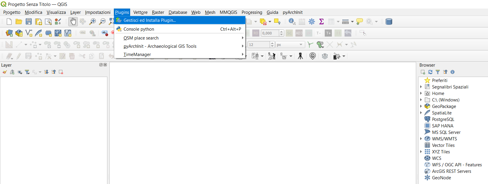

4. Installazione
Nota
Attenzione!
Note per reinstallare o aggiornare pyarchinit:
Per reinstallare pyarchinit o fare l’upgrade alle nuove versioni, al momento seguire questa procedura, sia se si installa da zip che da repository.
1- disattivare pyarchinit da plugin manager
2- riavviare qgis
3- disinstallare pyarchinit da plugin manager
4- installare pyarchinit da zip o da repository.
Esistono due modi per installare pyArchInit.
La prima consiste nell’inserire il seguente link nel manager dei plugin di QGIS (Consulta la pagina ufficiale di pyArchInit su GitHub.):
http://pyarchinit.org/pyarchinit_repository
La seconda, installando il plugin da un file ZIP, per cui si rimanda alla sezione Installazione da ZIP.
Nella Barra dei Menu andare su plugin e cliccare su Gestisci ed Installa Plugin. Dalla finsestra che si aprirà, andare su Impostazioni
A questo punto cliccare il tasto Aggiungi

Inserire il nome pyArchInit e copiare in URL il link riportato sopra. Infine, premere su OK e chiudere il Manager dei Plugin

4.1. Dipendenze
Dipendenze
SQLAlchemy
reportlab
PypeR (per R)
Software R
Software di visualizzazione Graphviz*(vedi nota)
modulo python graphviz
matplotlib
pdf2docx==0.4.6
pysftp
totalopenstation
Nota
Istruzioni per installare Graphviz (prima installazione)
Windows: Scarica l’eseguibile dell’ultima versione di Graphviz (2.x) e installalo.
Se hai già installato una versione precedente di Graphviz, disinstallala prima di continuare con la nuova versione, altrimenti non puoi impostare il percorso della nuova versione di Graphviz in pyarchinit
Mac: Installa graphviz via Homebrew o via Macport
brew install graphviz» o trimite Macport
sudo port install graphviz
Linux: Installa graphviz via terminale
sudo apt install graphviz
Le dipendenze possono essere installate anche usando il modules_installer.py eseguendolo da una shell python:
python modules_installer.py
4.2. Intallazione da zip
Scaricare l’archivio zip da github https://github.com/pyarchinit/pyarchinit Installare i requisiti dei pacchetti python (vedere il paragrafo Dipendenze) Aprire QGIS e poi da Plugin manager usare Install from ZIP per installare il plugin
Avvertimento
Durante la prima installazione comparirà un messaggio per avvertire della mancanza di pacchetti python richiesti dal plugin.
Sotto Windows è necessario avviare QGIS come Amministratore (se usi usa la versione standalone), quando si installa il plugin per la prima volta al fine di installare correttamente tutte le dipendenze.
Se usi PostgreSQL, ti consigliamo di installare PostgreSQL >=9.6
Se avete già un db pyarchinit, usate lo strumento «update posgres» o «update sqlite» nel modulo di configurazione di pyarchinit per aggiornare il vostro db alla nuova versione, e poi lo strumento di conversione se il vostro db non è aggiornato alla versione 5 di spatialite